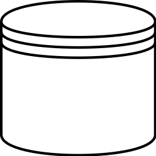
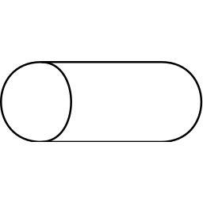
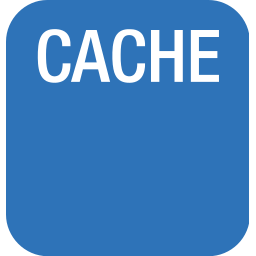

My mentee recently asked me what software architecture is. How do you draw an architecture diagram? What is a bad one and how do I learn to draw good ones?
The software architecture gives a very high-level overview of a software system.
Typical Components
A software architecture tries to solve a problem. It tries to achieve "high quality" in some of the properities mentioned in ISO/IEC 25010.
One very typical property is modularity. We want to have components which are to a large degree independent so that different teams can work on it. It also helps with Analysability, Modifiability and Testability.
| Image | Technology | Description |
|---|---|---|
| Database  |
MySQL, PostgreSQL | Databases are a typical way to store data and state. One distinguishes relational databases from NoSQL Databases. ACID properties are important. |
| Queue / Kafka Topic  |
Celery | A job queue can be used to distribute computationally intensive tasks. Think about encoding a video on YouTube. |
| Object Storage |
AWS S3 / Google Cloud Storage | Storing files is often useful for various parts of machine learning projects. In the YouTube example, storing an encoded file. |
| Front Ends FEs |
Android, IOS, Web | The front-ends typically can be seperated pretty well in different teams. They need to access the same backend services. |
| Cache  |
Memcached, CDN for static files, Redis, Cassandra | Caches are important to make things fast and reduce load. There are many different ways to cache. |
| Load Balancer |
AWS ELB, NGINX | If you built your service in a way to be horizontally scalable, load balancing is crucial. Round-robin or hashing on the IP address are possible choices. |
Interfaces
When reading that there are different Front Ends, you might wonder how you define the interfaces between front ends and backend services.
- REST API: OpenAPI Specification e.g. with Flask-RestX
- JSON Schema
- Avro
- Flat file: Sometimes it is enough to make a file available, e.g. via FTP or even HTTP (Amazon S3). The strenght of a single file is batch-load. You can keep the files and thus track the past. It is not a good choice for streaming / real time applications where you have a lot of events.
Typical Patterns
- Layers: Presentation layer, application layer, business logic layer, data access layer
- Client / Server: Online applications
- Master / Slave: In database replication
- Broker pattern: Distributed Systems
- Peer-to-peer pattern: File sharing
- Event-bus: Android development
- Model-view-controller: Django applications and many more web applications
See also
- Vijini Mallawaarachchi: 10 Common Software Architectural Patterns in a nutshell, 2017.
- Eberhard Wolff: How to Become a Great Software Architect at GOTO 2019
- Clément Mihailescu: Google Systems Design Interview With An Ex-Googler, 2020.